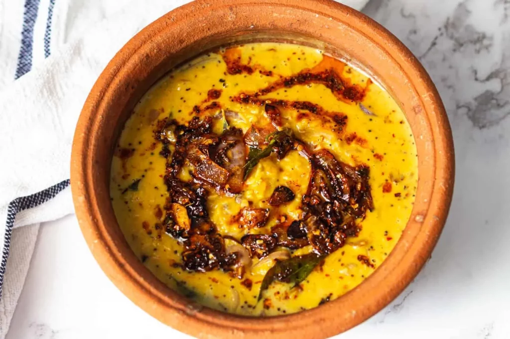

Dhal curry

Home Made Sri Lankan Chicken Curry
Sri Lankan college students guide to easy Dhal (lentil) curry
Ingredients
- Dhal
- Onions
- Tumeric powder
- Curry powder
- Chilli powder
- garlic
- Salt
- Coconut milk
- oil
Steps
- Heat up oil and add onions untill slightly brown.
- chilli powder ( to your preffered amount ). and some chillie pieces (optional)
- add half a tea spoon of curry podwer and half a tea spoon of tumeric podwer.
- Put in the (washed) Dhal and mix well and keep it for 2 minutes.
- add salt and mix well.
- add water till it covers the dhal and let it simmer till fully cooked.(it will turn yellow)